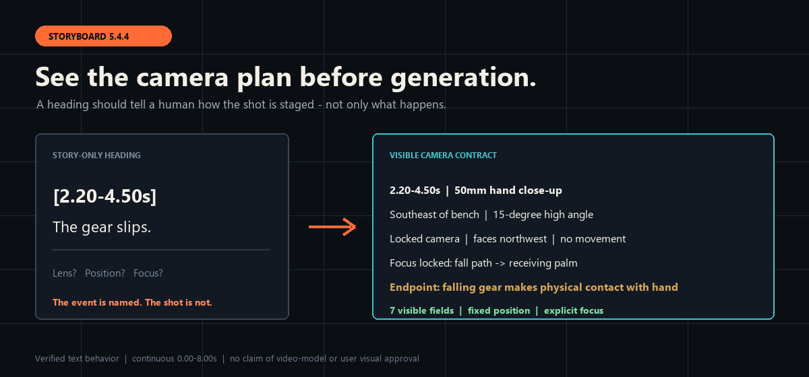

01 / STORY
Write or repair the scene
Find the earliest causal break, give every character an action, and make dialogue change the next choice.
See the Director Agent before/afterOPEN-SOURCE AGENT SKILLS · v1.3.0
Open Film Skills helps Codex, Claude Code, TRAE, CodeBuddy, WorkBuddy, and compatible Agents write stories, lock reusable assets, design cinematic shots, build prompts, and organize AI-video production.
从剧本、人物场景道具资产，到电影化分镜、提示词、AI视频生产与验收；先选一个结果，不必先理解整套系统。
THE PRODUCTION ROUTE
START WITH ONE OUTCOME
01 / STORY
Find the earliest causal break, give every character an action, and make dialogue change the next choice.
See the Director Agent before/after02 / SHOTS
Expose the lens, camera position, path, speed, focus handoff, blocking, and physical endpoint.
See the Storyboard 5.4.4 proof03 / PRODUCTION
Check assets and cost gates, generate in stages, edit, play the whole result, and repair visible failures.
Read the production SkillPROOF, NOT A PROMISE
Storyboard Director 5.4.4 replaces story-only headings with a visible camera contract: optics, side and height, path and orientation, speed, focus handoff, and physical endpoint.
Recorded status: internal text-behavior validation. This does not claim video-model execution or user visual approval.
Inspect the complete eight-second case
REAL LOCAL MEDIA
These original clips were generated on the maintainer's local machine during 3D previs research. They are published as bounded evidence—not as finished AI films or proof of external adoption.
5.0s · 960×540 · 24fps
Shows a playable push, actor blocking, a hard cut, lateral tracking, and scene parallax in a rough 3D space.
Internal visual pass. Not a finished AI video, not an external-user result, and not proof that the local previs executor is published in this repository.
2.8s · 960×402 · 67 frames
Shows two-hand grip geometry, final-surface contact, a held impact interval, and opposite recoil in one bounded action.
Single-action gate only. It is not a complete fight, a final render, a production-ready 30-second sequence, or user approval.
Source hashes, dimensions, status, exclusions, and publication boundaries are recorded in the media evidence manifest.
TRY IT IN 60 SECONDS
npx --yes skills@latest add 62656456/ai-film-skills --list
npx --yes skills@latest add 62656456/ai-film-skills \
--skill ai-storyboard-director \
--agent codex \
--copy \
--yesThe verified CLI route discovered 18 stable Skills and copied all six Storyboard Director runtime files with SHA-256 parity.
Native activation and model behavior still belong to the selected Agent host.
EVIDENCE BOUNDARY
Validated: repository structure, package isolation, cross-platform CI, deterministic Release assets, public examples, and directory discovery.
Recorded separately: host activation, model behavior, video execution, external adoption, creative quality, and explicit user acceptance.
Author examples: the Director case is `SELF-AUDIT ONLY`; the Storyboard case proves text behavior, not generated-video quality.